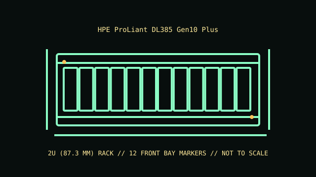

[ MODEL IDENTIFICATION // PROLIANT DL385 GEN10 PLUS // 2U DUAL-SOCKET SERVER ]
HPE ProLiant DL385 Gen10 Plus
2U (87.3 mm); 87.5 × 445.4 mm (H × W); listed chassis depth varies by drive layout—about 711 mm for SFF and 749 mm for LFF before rails/cable hardware.

REVISION CAVEAT: Drive and expansion maxima represent alternate/qualified configurations. Verify HPE product number, system board revision and installed backplane before service or component substitution.
Specifications & fit
| Catalog subcategory | Rack server enclosures |
|---|---|
| Model / board and backplane | HPE dual-socket AMD EPYC system board with chassis-specific front/mid/rear storage backplane options. SAS/SATA/NVMe capability is controlled by cage, backplane, cabling and Smart Array/controller selection. |
| Rack height / dimensions / rails | 2U (87.3 mm); 87.3 × 445.4 × approximately 736 mm (H × W × D, common chassis); drive-cage and rear options vary the complete installed depth. Rails and cable-management arms project farther. HPE 2U rail kit options fit supported square-/round-hole rack posts; confirm the correct rail generation, post spacing and optional cable-management-arm depth. |
| Power supply | Redundant hot-plug HPE Flex Slot power supplies, with 500 W, 800 W and 1600 W classes among supported options; select approved modules for the installed CPU, accelerator and storage configuration. |
| Drive bays | Up to 28 SFF or 12 LFF bays in supported front/mid/rear combinations; common front chassis are 8/24 SFF or 12 LFF. Backplane, controller and option kit determine SAS/SATA/NVMe support. |
| Expansion / risers | Multiple PCIe Gen4 riser assemblies provide configuration-dependent expansion, up to eight slots in supported layouts; accelerator support requires matching risers, GPU enablement and power. |
| Cooling | Redundant hot-plug fans with high-performance variants for greater CPU, drive or GPU thermal loads. Use chassis-specific fan blanks, shrouds and baffles to preserve designed airflow. |
| Compatibility | DL385 Gen10 Plus uses dual-socket AMD EPYC and generation-specific system board, risers, cages, backplanes, fans and Flex Slot PSUs. Do not mix DL385 Gen10, Gen10 Plus and Gen10 Plus V2 components without explicit HPE part support. |
| Revision identification | Drive and expansion maxima represent alternate/qualified configurations. Verify HPE product number, system board revision and installed backplane before service or component substitution. |
Compatibility & preservation notes
DL385 Gen10 Plus uses dual-socket AMD EPYC and generation-specific system board, risers, cages, backplanes, fans and Flex Slot PSUs. Do not mix DL385 Gen10, Gen10 Plus and Gen10 Plus V2 components without explicit HPE part support.
HPE 2U rail kit options fit supported square-/round-hole rack posts; confirm the correct rail generation, post spacing and optional cable-management-arm depth. Always use the correct lifting procedure for the complete installed unit and disconnect power before service.
- Record the full model/product number, serial label, board and backplane identifiers, installed risers, PSU labels and rail-kit part number before disassembly.
- For rack servers, verify exact generation, bay/backplane, controller, riser, fan and PSU compatibility; equal rack height does not establish parts compatibility.
- Keep drive carriers, blanks, shrouds, brackets and fasteners labeled with their original chassis and position. Measure the complete chassis, rails and cable arm before rack installation.
Manufacturer manuals & product specifications
- HPE ProLiant DL385 Gen10 Plus Product Information ReferenceManufacturer documentation for this exact model family; verify the machine/product number and document revision.
- HPE ProLiant DL385 Gen10 Plus support documentationManufacturer documentation for this exact model family; verify the machine/product number and document revision.
Published dimensions and option maxima vary by build. Check the specific product number and measure the specimen before restoration, shipping or installation.